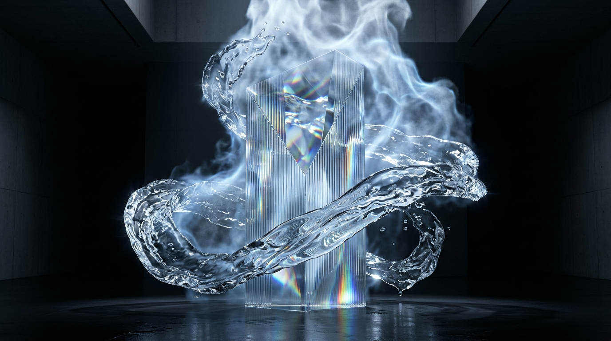
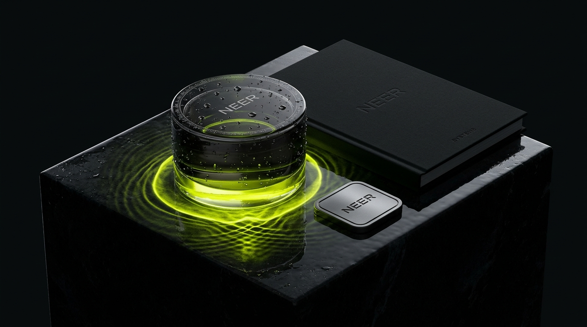
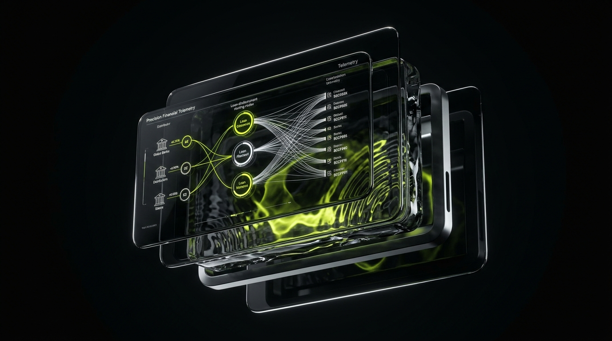
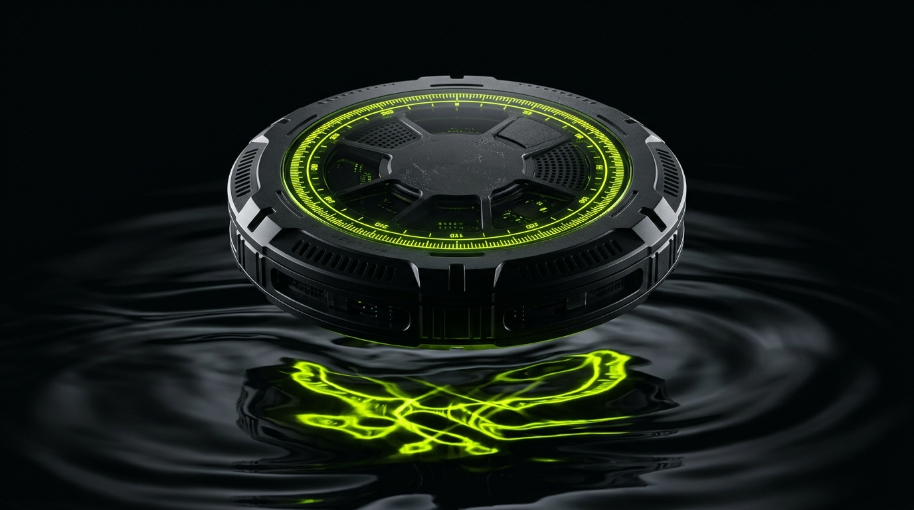

Cinema to Code.
Strategy to
Software.
Most businesses hire one agency for brand naming, another for web development, a third for commercial filmmaking, and an IT vendor for AI. The result is disjointed execution and diluted enterprise value. NEER synthesizes these four forces under one sovereign roof—uniting classical diagnostic scholarship with world-class commercial cinema and deterministic AI engineering.

Physical retail packaging to WebGL flagships to sovereign agentic workflows.
Four Execution Engines.
One Continuous Current.
We operate across the three physical phase states of water to build unyielding commercial authority:
Brand Strategy, Identity & Packaging

Before a brand can flow across digital channels, it needs unshakeable physical structure. We define your category position, name your venture using phonetic acoustics, architect your visual token systems, and engineer tactile packaging and retail environments that command instant shelf authority.
High-Performance Web Architecture
In digital environments, latency is friction—and friction kills conversion. We engineer high-performance web flagships that combine museum-grade WebGL visual craft with instantaneous edge-routed server architecture. No bloated WordPress templates; pure headless code built for speed.

Commercial Cinema, 3D CGI & Production
Vapor expands to fill every room. Our cinematic heritage across 46+ feature films gives NEER an unfair advantage in commercial storytelling. We direct, produce, shoot, and grade television commercials, high-stakes brand manifesto films, and photorealistic 3D Octane/Redshift product worlds that command undivided attention.
Engineered AI Systems & Autonomous Workflows
Replacing SaaS chaos with deterministic, sovereign, air-gapped agentic pipelines. We build multi-modal customer concierges, automated document underwriting swarms, predictive commercial modeling, and private VPC infrastructure where you retain 100% ownership of code, fine-tuned weights, and data.

Cross-Disciplinary Proof:
Where Craft Meets Code.
Real client transformations executed across identity, packaging, web flagships, and autonomous AI systems:
AXIS Solution
Enterprise Identity · IoT Fleet Triage
Redesigned enterprise hardware branding and engineered an autonomous telemetry triage swarm that reduced maintenance backlog by 84%.
YourDSA
Fintech Platform · Underwriting Agent
Architected sub-50ms distributor portal and engineered a multi-modal document extraction pipeline dropping underwriting from 48h to 9m.
Soil Story
Packaging Architecture · Brand Identity
Engineered sustainable tactile packaging flacons, blind-debossed labels, and an e-commerce digital flagship for organic agricultural products.
Configure Your Sovereign
Transformation Scope.
Select the required execution engines for your commercial challenge. Our senior partners review scope requirements directly.